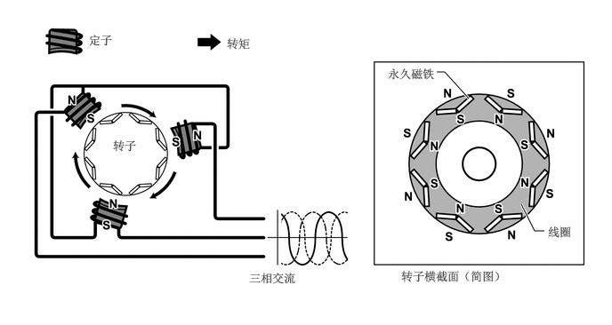
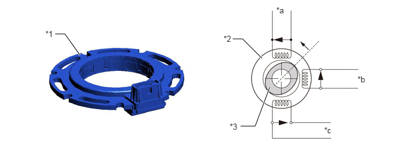
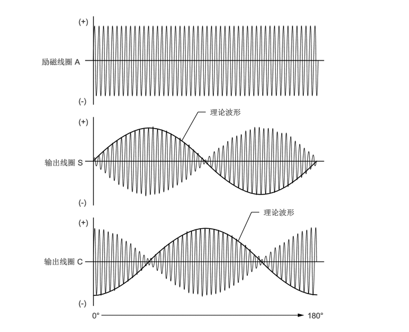

构造
发电机 (MG1) 和电动机 (MG2) 采用了紧凑、轻质的永磁同步电动机。
发电机 (MG1) 为 HV 蓄电池充电并提供电能以驱动电动机 (MG2)。此外，通过调节发电量（从而改变发电机转速），发电机 (MG1) 有效地控制传动桥的无级变速功能。发电机 (MG1) 还可作为起动机以起动发动机。
根据具体情况，电动机 (MG2) 可与发动机配合工作作为额外电源辅助发动机输出功率或单独工作，从而实现了卓越的性能（例如平稳起动和加速）。
电动机发电机 ECU (MG ECU) 接收自混合动力车辆控制 ECU 的信号，并根据这些信号切换智能电源模块 (IPM) 中的绝缘栅双极晶体管 (IGBT) 以驱动发电机 (MG1) 和电动机 (MG2)。
三相交流施加到定子线圈的三相绕组时，电动机内产生旋转磁场。根据转子旋转位置和速度控制磁场的旋转以将位于转子内的永久磁铁拉向磁场，从而产生扭矩。此扭矩实际上与电流成比例，且速度由交流的频率控制。此外，对磁场的旋转和转子磁铁的角度进行精确控制，从而即使高速下也能有效生成高扭矩。
对于发电机 (MG1) 和电动机 (MG2)，优化了转子中永久磁铁的位置，以有效利用磁阻转矩*。这样便增强了转子的转动力，有助于提高驱动力。
*：定子和转子之间间隙内的磁阻发生变化，因而生成扭矩。
发电时，转子旋转形成了磁场，包括定子线圈中的电流。

转角传感器（解析器型）
解析器型旋转传感器是一种可靠、紧凑的传感器，可精确检测磁铁位置，需要对发电机 (MG1)、电动机 (MG2) 进行有效控制。
如图所示，旋转传感器的定子采用了 3 个线圈。输出线圈 S 和输出线圈 C 互成 90°角放置。
此传感器向励磁线圈 A 施加一定量的交流电，从而将特定频率连续施加到输出线圈 S 和输出线圈 C，与转子转速无关。由于转子是椭圆状，所以定子和转子之间间隙的大小随着转子旋转而发生变化。因此，输出线圈 S 和输出线圈 C 的输出波形峰值根据转子的位置而波动。
电动机发电机 ECU (MG ECU) 检测输出线圈峰值。然后，将这些值进行连接以形成理论波形。根据输出线圈 S 和输出线圈 C 之间的差值估算转子的绝对位置，根据输出线圈 S 和输出线圈 C 的理论波形相位差确定旋转方向，并根据特定时间段内转子的角度变化估算转速。
下图所示为转子沿正 (+) 向旋转 180° 时，励磁线圈 A、输出线圈 S 和输出线圈 C 的波形。

| *1 | 转角传感器（解析器） | *2 | 定子 |
| *3 | 转子 | - | - |
| *a | 励磁线圈 A | *b | 输出线圈 S |
| *c | 输出线圈 C | - | - |

温度传感器
发电机 (MG1) 和电动机 (MG2) 均配备有温度传感器以检测定子温度。
混合动力车辆控制 ECU 根据来自这些温度传感器的信号对混合动力系统进行控制。